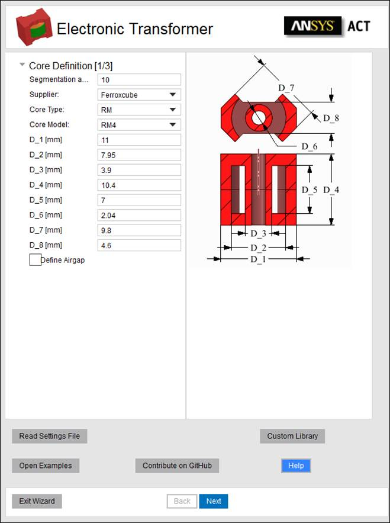

Electronic Transformer Extension Documentation
 © 2020, ANSYS Inc., All
rights reserved. Unauthorized use, distribution or duplication is prohibited.
© 2020, ANSYS Inc., All
rights reserved. Unauthorized use, distribution or duplication is prohibited.
Copyright and Trademark Information
© 2020, ANSYS Inc., All rights reserved. Unauthorized use, distribution or duplication is prohibited. ANSYS, ANSYS Workbench, Ansoft, AUTODYN, EKM, Engineering Knowledge Manager, CFX, FLUENT, HFSS and any and all ANSYS, Inc. brand, product, service and feature names, logos and slogans are registered trademarks or trademarks of ANSYS, Inc. or its subsidiaries in the United States or other countries. ICEM CFD is a trademark used by ANSYS, Inc. under license. CFX is a trademark of Sony Corporation in Japan. All other brand, product, service and feature names or trademarks are the property of their respective owners.
Disclaimer Notice
THIS ANSYS SOFTWARE PRODUCT AND PROGRAM DOCUMENTATION INCLUDE TRADE SECRETS AND ARE CONFIDENTIAL AND PROPRIETARY PRODUCTS OF ANSYS, INC., ITS SUBSIDIARIES, OR LICENSORS. The software products and documentation are furnished by ANSYS, Inc., its subsidiaries, or affiliates under a software license agreement that contains provisions concerning non-disclosure, copying, length and nature of use, compliance with exporting laws, warranties, disclaimers, limitations of liability, and remedies, and other provisions. The software products and documentation may be used, disclosed, transferred, or copied only in accordance with the terms and conditions of that software license agreement. ANSYS, Inc. is certified to ISO 9001:2008.
U.S. Government Rights
For U.S. Government the users, except as specifically granted by the ANSYS, Inc. software license agreement, the use, duplication, or disclosure by the United States Government is subject to restrictions stated in the ANSYS, Inc. software license agreement and FAR 12.212 (for non-DOD licenses).
Third-Party Software
See the legal information in the product help files for the complete Legal Notice for ANSYS proprietary software and third-party software. If you are unable to access the Legal Notice, please contact ANSYS, Inc. Published in the U.S.A.
Overview of Electronic Transformer ACT
Overview of three required Input Panels
Circular (Valid only for wound transformers)
Known issues, bugs, suggestions
Overview of Electronic Transformer ACT
The Electronic Transformer Extension is a customized solution for electronic transformers. The ACT provides an easy-to-use interface to draw the geometry and setup a solution for a transformer or inductor. A database of basic topologies and materials for the commonly used cores is included in the ACT which allows users to choose the required shape and size of the core. In addition, users can define their own winding strategy using Winding definition panel (Planar or Wound types) which enables automatic creation of all winding turns with rectangular or circular (only for wound type) cross section.
The ACT allows users to automatically setup an Eddy Current Solution with (or without) a Frequency Sweep Definition. The ACT considers the frequency dependent core permeability and core loss Steinmetz coefficients. The ACT also allows defining matrix connections (series or parallel) if required. Final setup can be completed through the script or outside the script. This solution process creates a frequency dependent R/L model which can be imported into ANSYS Simplorer as a Maxwell Dynamic Eddy Current component.
The Transformer Modeling script includes three input panels which must be filled out sequentially: Core Definition, Winding Definition and Analysis Setup.
The ACT is built for ANSYS Electronics Desktop 2021R1. Please use the ACT with this or any version higher than this.
Read Input from file
If a model was created previously, a .json data file can be read in to recreate the same model. To run a demo example you can open examples folder by clicking “Open Examples”

All data required by the three input panels (core definition, winding definition, and analysis setup) is automatically saved in a .json file in the same directory as the project file with every execution of the script. Once this file is available, users can click on the “Read Settings File” button and browse to the tab file location to it. After selecting, all previous inputs will be automatically added the panels.
Note: Due to added functionality .tab files from the older versions are not supported.
The angle defined in the textbox will be used as the default segmentation angle for the geometry being created using the ACT. This value is used to segment major curvatures on core and winding. However fillets will not be segmented.
The default value is set to 0 degrees around 360 degree surface, that produces true surface geometry. The value of the segmentation angle must be 0 < angle < 20 degrees or 0 for true surface to avoid poor geometry representation.
|
|
|
|
|
Segmentation Angle: 0 deg (True) |
Segmentation Angle: 8 deg |
Segmentation Angle: 15 deg |

The ACT allows definition of geometry in “mm”.
The ACT contains a database of cores from several suppliers. Users can select the core supplier and then select the core type from available 15 topologies. For each core topology, different core models are provided for each supplier. The dimensions of the selected core model will be listed in the table, as shown below. Users can accept the core dimensions as displayed in the panel or manually modify them as per their requirements.
|
|
|
|
|
|
1. Select Supplier |
2. Select Core Type |
3. Select Core Model |
4. Modify Core Dimensions if required |


There are 15 core topologies currently supported by the ACT: E, EC, EFD, EI, EP, EQ, ER, ETD, P, PH, PQ, PT, RM, U, UI. These basic topologies are used frequently and are supplied by most of the manufacturers. The description of the dimensions of all these core topologies is given in below images.

In order to model an airgap in the core, user needs to select the “Define Airgap” checkbox. If this checkbox is checked, user will have option to define airgap on central leg or side legs or both. The user can enter the size of the airgap to be modelled and the specified airgap will be included in core geometry
Note: When an airgap is defined on the “Central Leg” or “Side Legs”, the overall dimensions of core remain unchanged (the airgap is created by removing material from the core at the specified leg.) However when airgap is defined as “Both”, the core halves are moved apart to add airgaps instead of removing material from core. Thus overall height of the core will increase.
|
|
||
|
Airgap On: Central Leg |
Airgap On: Central Leg |
Airgap On: Both |

Parameters related to winding specification are defined under the Winding Definition tab.
|
|
|
|
General Winding Settings |
Settings of each layer |
|
|
|
|
Wound Transformer |
Planar Transformer |


The meaning and specification of all the terms under this tab are described below.
For planar transformer user can specify Bottom and Side margins. Bottom margin is a spacing between core and board if board thickness is specified, otherwise it is a spacing between core and first winding layer.
Side margin is a spacing between core central leg and winding.
For wound transformer user can specify Top and Side margins. Both margins are the spacing between core and the bobbin if bobbin thickness is specified. Top margins are spacing at top and bottom of the core while side margin is the spacing along the core center leg.
Layer spacing is the spacing between two adjacent layers of the core. This value can be zero or greater than zero.
Thickness of the bobbin or board on which winding is wound. If this value is set to zero, bobbin is not considered. If Bobbin Thickness is more than zero, the value is considered for positioning the winding even if include bobbin/board is unchecked.
Selecting this checkbox will model the geometry of bobbin for wound and board for planar transformers. If unchecked, bobbin/board thickness value is used to determine the position of windings while bobbin/board is not drawn explicitly.
Note: for planar transformer board will be drown for each layer
Total number of layers in the winding. Once the entry for number of layers is done, table below will be modified to facilitate entry of parameters for all layers.
Tip: when you increase number of layers it will copy the last row. If you have the same parameters for multiple layer, it would be easier to predifine parameters before increasing number of layers.

Wound (Concentric)Wound transformer means Concentric Layer style and that arrangement indicates that layers are arranged radially with layer number incremented radially outwards. Turns in each layer in this arrangement will be vertical (top to bottom). |
Planar (TopDown)Planar transformer means Topdown Layer style that arrangement indicates that layers are arranged from top to bottom in the core. Turns in each layer in this arrangement will be added radially outwards. |
|
|
|
|
Layer Type: Concentric |
Layer Type: TopDown |
When Conductor type is set to Rectangular, it is considered that cross section of the conductor is rectangular. Rectangular conductor definition will require following inputs
Conductor Width
Width of the conductor
Conductor Height
Height of the conductor
Number of turns
Number of conductor turns in each layer
Insulation Thickness (Wound)
Thickness of the insulation on the conductor. Even though insulation is not modelled geometrically, the value specified for insulation thickness will be considered for modelling location of the turns. Add insulation around the whole wire
Turn Spacing (Planar)
Spacing between conductors of one layer for planar transformers
When Conductor type is set to Circular, it is considered that the cross section of the conductor is Circular. Circular conductor definition will require following inputs
Conductor Diameter
Diameter of the conductor to be specified
Number of Turns
Number of conductor turns in each layer
Insulation Thickness
Thickness of the insulation on the conductor. Even though insulation is not modelled geometrically, the value specified for insulation thickness will be considered for modelling location of the turns
Number of Segments
The value specified in this column will be used to segment the circular conductor. The value specified should be greater than 8. Any value less than 8 is not permitted.
When all inputs on the “Winding Definition” panel are completed, the user can click on “Next” to create the model in Maxwell.
Parameters related to Analysis Setup are defined under “Analysis Setup” tab of the GUI. Once the geometry is drawn using “Draw windings” checkbox on winding Definition tab, the options on Analysis Setup tab will be enabled.
Select the ferrite core material and coil material (copper or aluminum) from the pull down menus.
During setup extension enables thermal properties for coils for further two-way coupling with thermal tools like Icepak and Fluent
In order to add a new core material, users can follow below steps:
1. Open ACT and click Custom Library button. It will open folder where you can modify material_properties.json file to add new materials
2. Add new material respecting JSON syntax. For each material you need to add Conductivity, Steinmetz coefficients (Cm, X, Y), density and permeability versus frequency
Once this is done, the material should be available for selection for next run of the ACT
User needs to define which of the layers correspond to Primary winding and which layers will be considered as secondary, tertiary, etc winding.

Connections Definition
Once all layers are assigned to appropriate Winding Side “Defined Connections” button will be activated. User needs to specify how layers are connected within winding side
Number of transformer windings (sides) is limited only by number of geometrical layers created (you can create as many sides as you have layers such as: Primary, Secondary, Tertiary, etc)
ACT supports two types of excitations for windings: Voltage and Current windings.
User has to define either Voltage value in Volts or Current value in Amperes for primary side of the transformer depending on the chosen excitation strategy
Load (Resistance) table
User has to specify resistance for each defined side in the Load Table
The Frequency defined under Adaptive Frequency is used for solving the fields with Adaptive mesh refinement. It is advisable to define highest frequency of the frequency range to be solved under the adaptive frequency. This ensures that the skin depths are resolved for all the frequency range to be solved.
Auto skin layers: if thickness of the conductor is less than 3 values of skin depth then ACT will automatically generate additional layers for mesher to capture eddy effects
The checkbox “Define Frequency Sweep” enables to setup a frequency range on which the results need to be computed. After the checkbox is checked, users can click on the button “Set” to define the frequency range to be solved. Users can Define Start and Stop frequency together with number of samples to be solved in that range. Further the sampling method can also be defined as Linear or Logarithmic.
Note: Frequency Sweep will be necessary if user is interested in System Simulation using State Space Model extracted from Maxwell solution.
The details mentioned under this section will be used to determine the level of accuracy required in the simulation.
The Percent Error allows you to control the desired solution accuracy. Smaller values produce more accurate (but slower) solutions.
The Maximum Number of Passes is the maximum number of mesh refinement cycles you would like Maxwell to perform. This value is a stopping criterion for the adaptive solution; if the maximum number of passes has been completed, the adaptive analysis stops even if the Error criterion is not achieved.
Regions offset specifies how far will pad region in all directions from the geometry. Specified in percent.
When all inputs on the “Analysis” panel are completed, the user can click on “Setup Analysis” to setup the model in Maxwell or click on “Analyze” to solve Maxwell and close the script.
By default, ACT generates half of the model to reduce simulation time. However, if user prefers to solve full model this option is available.
The Working directory definition allows users to define location where the file will be saved. User should have permission to write in the specified directory.
By default, the directory is pointed towards the Maxwell Project directory (Tools > Options > General Options) or the directory of the project in which the ACT is being executed. Users can either directly enter the path in the textbox or use the button adjacent to it and browse to the required folder.
Extension generates report with calculated leakage inductance between all windings.
During analysis setup extension applies field overlays on the core and coils:
1. MagJ, Ohmic Losses for Windings
2. MagB, Core Losses for the Core
In the version V2 there isn´t any known problem.
In case if you found a bug in extension and something working not properly, or you have a suggestion how to improve the Electronics Transformer ACT please
· open an issue on GitHub
· contact one of the listed engineers: